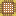

去皮竹桥阶梯
Dry Bamboo Bridge Stair
英文名: Dry Bamboo Bridge Stair命名空间 ID:
mcwbridges:dry_bamboo_bridge_stair类型: 方块所属模组: Macaw's Bridges资料检索: 🔎 在 MC百科 搜索「去皮竹桥阶梯」合成获得 (1)
有序合成Macaw's Bridges
原始 JSON
{
"type": "minecraft:crafting_shaped",
"group": "bamboo_stairs",
"pattern": [
" F",
" FF",
"FFF"
],
"key": {
"F": {
"item": "mcwbridges:dry_bamboo_bridge"
}
},
"result": {
"count": 6,
"id": "mcwbridges:dry_bamboo_bridge_stair"
}
}用于合成 (1)
无序合成Macaw's Bridges
原始 JSON
{
"type": "minecraft:crafting_shapeless",
"group": "recyclable_bridges",
"ingredients": [
{
"item": "mcwbridges:dry_bamboo_bridge_stair"
}
],
"result": {
"count": 1,
"id": "mcwbridges:dry_bamboo_bridge"
}
}